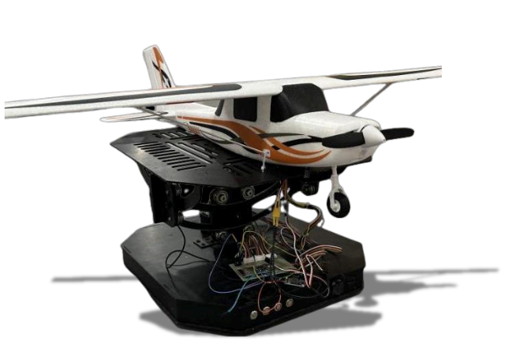

AeroBOT-T2 固定翼无人机飞行控制教学科研实验平台
聚焦固定翼飞控底层技术教学，将抽象控制理论转化为实体化、可视化、可调试的实操实训载体，助力院校高质量开展飞控核心教学与算法研发。

产品概述
AeroBOT-T2 是无人机飞控实验室系列的核心产品之一，专门针对固定翼无人机飞行控制底层技术教学需求打造。平台精准复刻真实固定翼无人机飞控系统的硬件拓扑与软件控制链路，将复杂的飞行控制动力学模型、姿态闭环调控算法、传感数据融合处理等抽象技术内容，转化为可触摸、可观测、可调试的实体化教学过程。
学生可基于该平台进行沉浸式实操调试与参数标定，深度理解俯仰、滚转、偏航三大核心姿态的动力学耦合关系，切实掌握固定翼无人机基础姿态调控的底层控制逻辑与调试方法。教师可依托平台系统拆解飞控全闭环工作流程，详细讲解从传感器原始数据采集、姿态解算、控制决策到伺服驱动输出的完整技术链路。
核心功能
FOC伺服电机高精度模拟：无需实际升空飞行，即可在地面台架上验证飞控调参效果，大幅降低测试风险与成本。
三轴姿态实时量化反馈：实时显示俯仰、滚转、偏航角度数据，量化姿态关联，直观感受控制指令与机身响应的技术关联。
全闭环控制链路还原：完整复现机载传感器（加速度计、陀螺仪等）采集、姿态解算、PID控制、舵机驱动执行的全技术流程。
嵌入式控制开发支持：开放底层代码与接口，兼容ROS、Matlab等工具链，便于算法验证、二次开发与科研扩展。
产品特点
FOC伺服电机驱动，无需升空即可验证调参效果，安全高效。
实时显示三轴数据，量化姿态关联，教学可视化程度高。
配套完善的理论与实操课程体系，快速掌握固定翼飞行原理。
硬件平台模块化设计，支持俯仰、滚转、偏航三轴独立运动，适配不同教学实验。
基本配置参数
教学与科研价值
AeroBOT-T2 为固定翼无人机飞控教学提供了零风险、可重复的实验环境。学生能够通过反复调试PID参数、修改控制律，深刻理解飞控系统各环节的物理意义与工程实现，无缝衔接理论课程与工程实践。
平台同时支持科研创新，可为先进控制算法（如自适应控制、神经网络控制等）提供硬件在环测试环境，助力高校教师在航空航天、自动化、人工智能等领域产出高质量科研成果。
适用场景
适用于高校无人机工程、自动化、航空航天、机器人工程等专业的飞控原理教学、课程设计、毕业设计；无人机研发企业的固定翼飞控系统前期验证与嵌入式算法调试；以及低空飞行器（eVTOL）控制系统的部分技术预研。